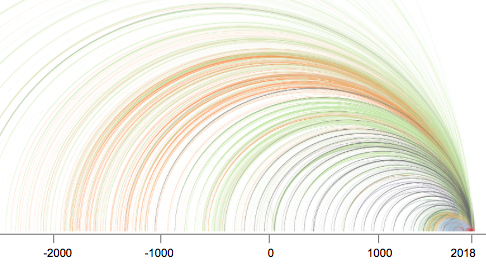
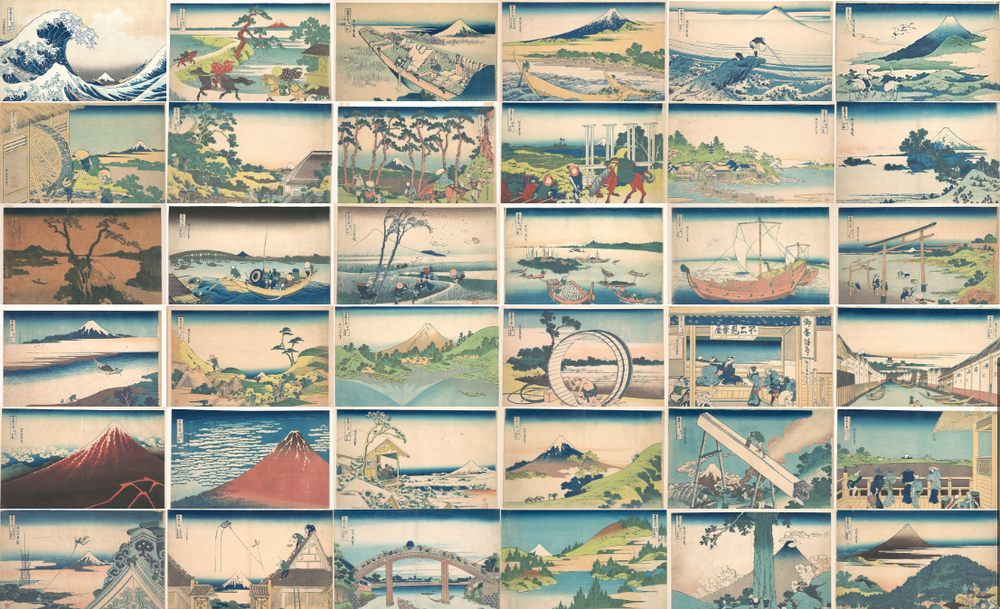

Art Over Time: tracing MET objects from time of creation to year of acquisition.

This project observes patterns of acquistion over time by MET Department.
Process
Concept Sketches
Mockup v1
Mockup v2
Protoype
Static Prototype
Live Prototype (work in progress)
source code
Finding the 36 [Google Street] Views of Mount Fuji

This project explores the first thirty-six designs of the series and their possible corresponding geolocations, experienced through Google Street Views.
Process
Concept Sketches
Final Concept Mockup
Prototype
source code
Live Prototype
Understanding Comics
Discussion slides
Storytelling + Interactivity
See Inspiration